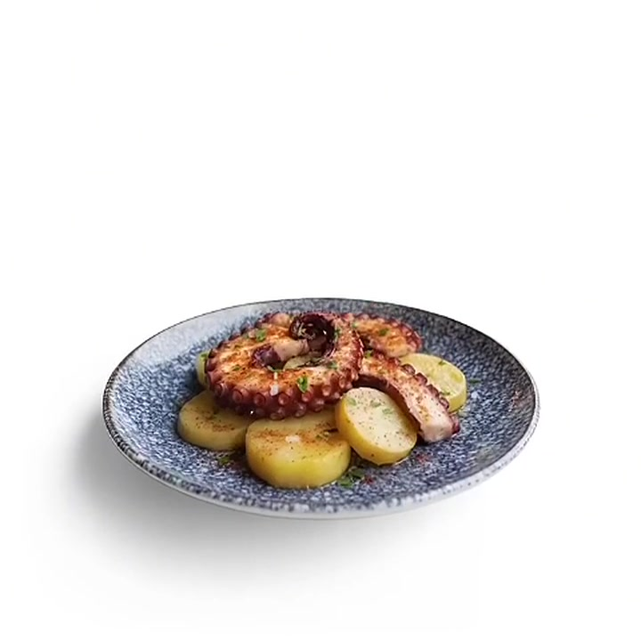

Giulia M.2 settimane fa
★★★★★
«Il polpo si taglia con la forchetta. Atmosfera da casa di amici e vini scelti benissimo: il piatto che dà il nome al locale vale da solo il viaggio.»
✺ Osteria — San Salvario, Torino
Il mare incontra le Langhe: polpo verace, patate di montagna e vini di collina, in dodici tavoli che profumano di casa.

Cotte nel burro di malga, schiacciate al coltello.
Quattro ore di dolcezza, poi un passaggio in brace.
Il tocco che fa innamorare.
✺ La firma della casa
Dal 2018, il piatto che ci dà il nome — € 18
Tutto il menù✺ La nostra storia
Lui pescava polpi a Camogli, lei impastava plin nelle Langhe. Si sono incontrati al mercato di Porta Palazzo, davanti a una cassetta di patate di montagna — e da quell'incontro, nel 2018, è nata un'osteria.
Da allora cuciniamo come si fa nelle case che amiamo: pochi piatti, materia prima testarda, vino versato generoso. Il polpo arriva dal Mar Ligure due volte a settimana; tutto il resto, dal Piemonte che abbiamo intorno.
«Si sente l'amore, piatto dopo piatto. Il polpo più tenero a duecento chilometri dal mare.»
— gli ospiti di San Salvario✺ Dove siamo
Via Saluzzo 29/F, a due passi dal Parco del Valentino. Metro Marconi, poi tre minuti a piedi seguendo il profumo.
su Google · 214 recensioni
«Il polpo si taglia con la forchetta. Atmosfera da casa di amici e vini scelti benissimo: il piatto che dà il nome al locale vale da solo il viaggio.»
«Prenotate: dodici tavoli e si riempiono in fretta. Tajarin al ragù di polpo indimenticabili, servizio che ti fa sentire a casa.»
«La sorpresa di San Salvario: mare e Langhe nello stesso menù senza stonare. Bonet finale perfetto, torneremo presto.»
✺ Contatti